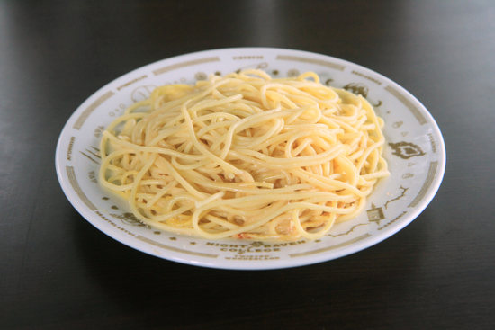
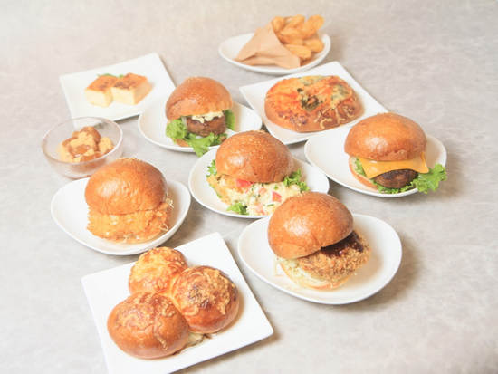
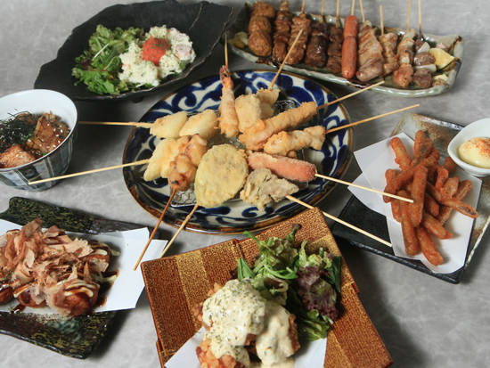
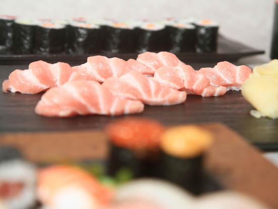
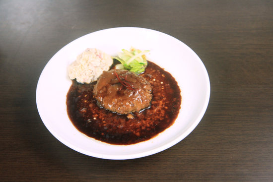
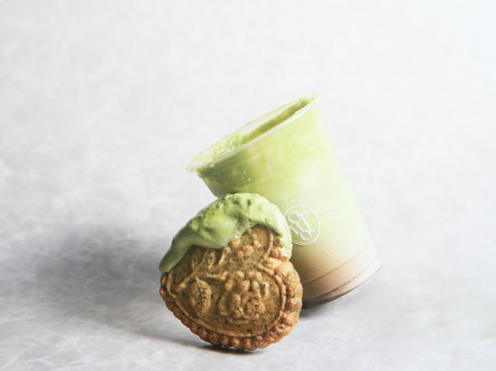

FOOD PHOTOGRAPHY— FOR RESTAURANTS
料理の湯気まで、
おいしそうに。
メニュー表やグルメサイト、SNSで「行ってみたい」と思ってもらえる一枚を。
飲食店さまのもとへ出張し、営業の流れに配慮しながら撮影します。
WORKS — FOOD
撮影作例
飲食店さまのメニュー撮影から。
ジャンルに合わせて撮り分けます。






※ 作例は、PIXTAオンデマンドでの飲食店撮影実績から掲載しています。
PLANS & PRICE
料理撮影プラン
料金はすべて税込です。
撮影データは編集済みで納品します。
- メニュー撮影20品目まで／120分（背景紙・簡易ライティング込み）20,000円
- 追加撮影追加10品目ごと+5,000円
- 店内・外観セットメニュー撮影と同日に、店内・外観・スタッフの様子も撮影25,000円
※ 店内・外観セットは、メニュー撮影（20品目まで）と店内・外観撮影を同日にまとめたプランです。
※ 対応エリア：北九州市／福岡県（その他のエリアもご相談ください）。エリアにより交通費を別途いただく場合があります。
※ 撮影した写真は、貴店のメニュー・Web・SNS・グルメサイト等でご自由にお使いいただけます。
SCENES
こんな撮影に対応します
- メニュー表・タブレットメニュー用の料理写真
- グルメサイト・予約サイト掲載用の写真
- InstagramなどSNS投稿用の写真（縦位置カットも）
- 新メニュー・季節メニューの撮り直し
- 店内・外観・スタッフの作業風景
- テイクアウト・デリバリー用の商品写真
FLOW
撮影の流れ
- ご相談：公式LINEまたはメールで、品目数とご希望日をお知らせください
- お打ち合わせ：メニューリストを事前に共有いただき、撮影順を決めます
- 撮影当日：背景紙とライティング機材を持参します。調理のタイミングに合わせて進めます
- 納品：選定・レタッチしたデータをオンラインでお渡しします
大手フードデリバリーサービスのメニュー撮影など、飲食店撮影の実績があります。まずは品目数の目安だけでも、お気軽にご相談ください。
CONTACT — FOOD
Fメニューの撮り直し、
相談からどうぞ。
品目数が決まっていなくても大丈夫です。
お店の状況に合わせて、撮り方をご提案します。
料理・飲食店撮影 / 対応エリア：北九州市・福岡県INSTAGRAM: @yohaku.studio.iw